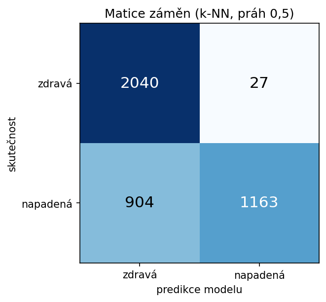

Jak se píšou krásné vědecké texty — co LaTeX je, jak se strukturuje dokument, základní příkazy a z čeho se skládá vědecký článek.
Ve Wordu vidíš rovnou výsledek a formátuješ myší. V LaTeXu napíšeš text a k němu značky — co je nadpis, co rovnice, co citace — a program z toho vysází hotové PDF.
Standard ve fyzice, matematice, informatice — i tato prezentace vznikla vedle reálného článku.
Napíšeš obyčejný textový soubor .tex. Program (pdfLaTeX) ho přečte, vyřeší všechny příkazy a vysází hotové .pdf.
★ Pro začátečníky doporučeno.
Vše před \begin{document}. Říká, jaký je to typ dokumentu (\documentclass) a jaké balíčky se použijí.
TěloMezi \begin{document} a \end{document}. Sem píšeš vlastní text, nadpisy, rovnice, obrázky.
Ahoj, světe!
Příkaz začíná zpětným lomítkem. Ve složených závorkách { } je povinný argument, v hranatých [ ] nepovinné volby.
Text tučně, kurzívou, strojopisem.
Nový odstavec vznikne prázdným řádkem.
Uvozovky: „takhle". Spojovník-, pomlčka — a rozsah 10–20.
1 Úvod a vymezení problému
2 Data
3 Metoda
3.1 Extrakce příznaků
3.2 Klasifikace k-NN
4 Vyhodnocení
Senzitivita v textu: TPTP+FN.
senzitivita = TPTP+FN, specificita = TNTN+FP (1)
Přesně tahle rovnice je v Sekci 4 vašeho článku.

Obrázek 1: Matice záměn k-NN baseline.
| Metoda | Přesnost | Senzitivita | AUC |
|---|---|---|---|
| ResNet50 + k-NN | 0,77 | 0,56 | 0,93 |
| Vaše řešení | — | — | — |
Tabulka 1: Výsledky na testovací sadě.
Výsledky shrnuje tabulka 1, matici záměn ukazuje obrázek 1. Postup popisuje sekce 4.
...síť ResNet50 [1]...
Literatura
[1] K. He et al. Deep Residual Learning for Image Recognition. CVPR, 2016.
Balíček (package) = sada hotových příkazů. Přidáš ho do preambule pomocí \usepackage{...}. Tady je reálná preambule vašeho článku:
Vědecké články mají ustálenou kostru. Jádro se zkráceně značí IMRaD: Introduction, Methods, Results, and Discussion.
Obecná kostra vlevo, vaše reálné sekce v main.tex vpravo — váš projekt už ji má celou.